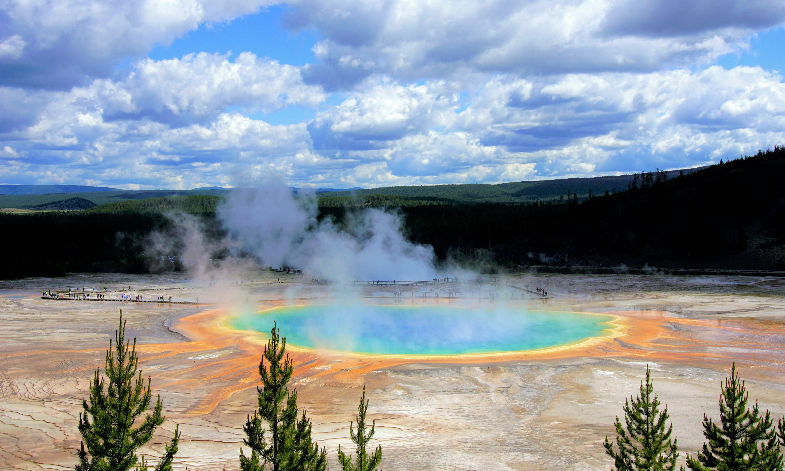
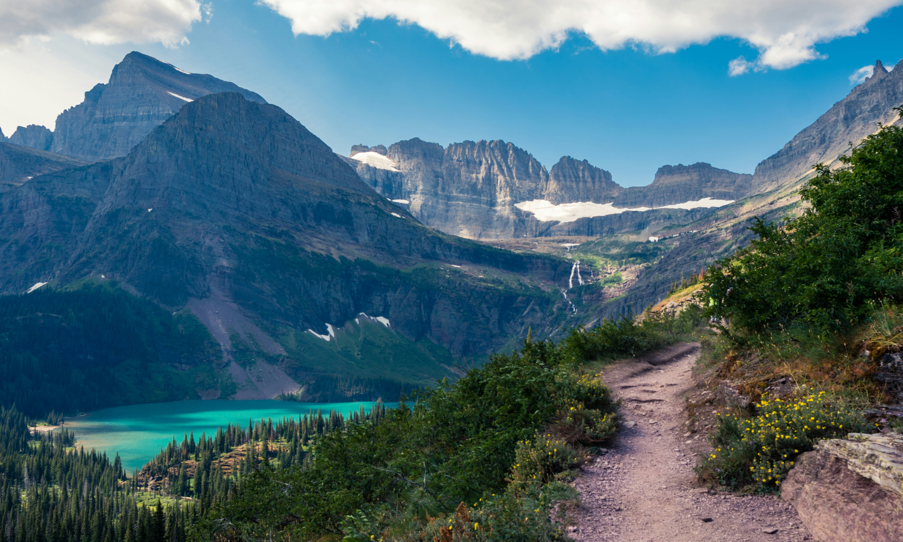

National Parks
The Great Outdoors, Preserved
The United States has 63 national parks, which are congressionally designated protected areas operated by the National Park Service. National parks are designated for their natural beauty, unique geological features, diverse ecosystems, and recreational opportunities, typically "because of some outstanding scenic feature or natural phenomena."



View our privacy policy